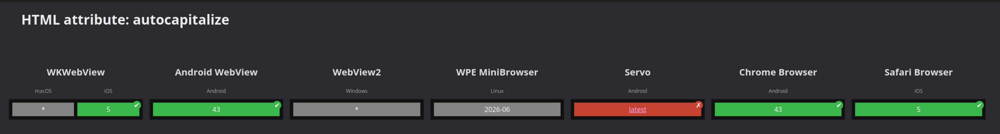

class: center, middle # Hacking for WebViews ## Niklas Merz #### W3C WebView Community Group & Apache Cordova ??? * **Maintainer of Apache Cordova which uses WebViews for cross platform mobile apps** * Chair of the W3C WebView Community Group * *Who has used WebViews?* --- # Notes https://hackmd.io/@rego/WEH2026-servo-webview/edit --- # Agenda 1. Intro * What is a WebView? * What Hybrid Apps need 2. WebView capabilities * Local file loading & Protocol Handlers * Cookie storage * Javascript bridges 3. ServoView today 4. What can we add to Servo? 5. Hacking - Can we build something today? ??? * Some context on WebViews and their demands for browser engines * I'll just give an intro and then need everyone of you to design the Servo features and start building * I'm not a Servo or Rust developer at all * Just a user * Then look at ServoView and what we could add to it to make it a good WebView for hybrid apps * Interactive session, please ask questions and share comments --- # What is a WebView? [W3C WebView Community Group](https://www.w3.org/community/webview/) > Software components that are used to render Web technology-based content outside of a Web browser (Native Apps, MiniApps, etc). [User Agent findings from W3C TAG](https://w3ctag.github.io/user-agents/#ua-as-software) > As software components, user agents can be parts of larger applications and can call libraries that implement the web platform or parts of it. ??? * WebView Community Group at W3C * Long discussion on specifics * Essentially embedding of web content in native apps --- # Why Servo matters a lot for WebViews > Servo aims to empower developers with a lightweight, high-performance alternative for embedding web technologies in applications. From servo.org <img src="img/webview/servo-meme.jpg" alt="Servo Meme" style="max-width: 60%; margin: 0 auto; display: block;"> ??? * It's hard to make changes to existing WebViews * **Recently set focus on embedding which makes it perfect for WebViews** * Big opportunity to get a new cross platform WebView * Competition is good * Learn from existing and best of all worlds --- # BCD & caniwebview.com ### Documentation what is supported in WebViews <p></p> Something like https://wpewebkit.org/wpt-status for Servo would be great! ??? * First find out what is supported in WebViews * Ran BCD myself and uploaded results to repo for showing what is supported in ServoView on Android * Compare with other WebViews * Dashboards like this are helpful to track progress and show users what is supported --- # What do Hybrid Apps need? * Cordova et al. mostly use local files * Injecting JS & CSS * Two way communication between native and web code * Sharing state (cookies, storage) between WebView windows * Controll over statusbar * Safe pause & resume ??? * Do you see anything that Servo can do well today? * Anything that would be hard to provide? --- # Testing Servo in Apache Cordova * Servo is easy to add to an Android app! * Cordova platforms have support for different engines * ServoView lacks features other WebViews have * Custom scheme or asset loader * Evaluate JavaScript * Cookie store * First make it work without any Servo modifications * Then work with Servo team to build a proper integration ??? * Presented this at FOSDEM * Thanks to some funding and guidance from NGI Mobifree fund by NLnet I got to work on bringing Servo to Cordova. * Android at least * Cordova back in the day had Crosswalk * I've started a plugin that shows it works * Notice quickly where servo lacks support for web features * Lack of APIs Cordova needs * plugin bridge and javascript evaluation * First make it work without any Servo modifications * continue working with the Servo team --- # Loading local files ### Custom scheme vs Asset handler You can't use file:// these days, right? > https://blog.merzlabs.com/posts/webview-history/ ??? * The example I always bring up * Coming from using a using a framework like React, Angular or Vue with Cordova * Use apis from WebView to load local files --- # Hacking ### Bring existing features to Java API to make it accessible to WebView developers on Android 1. registerProtocolHandler for Java [#42624](https://github.com/servo/servo/issues/42624) 1. Execute JavaScript [#41654](https://github.com/servo/servo/issues/41654) ### Design and build new APIs * Cookie Manager * Anything else you need for you embedding use case? ??? * I created two issues for features that I found missing when trying to use Servo in Cordova with Java * Anyone familiar with these issues? * What do you think we could work on? * What's a small issues and what needs a bigger design discussion? * What are roadblocks? --- ## Loading local files APIs ### Android - WebViewAssetLoader - Register domains - https://appassets.androidplatform.net/ - https://mydomain.com - Intercept GET & path ### iOS - WKURLSchemeHandler - Register custom URL schemes, e.g. app:// - myapp://appcontent - Intercept GET & POST ??? * Good example of platform-specific APIs that do the same thing differently * I spent many hours working finding solutions for problems this caused * Take inspiration from both for a new Servo API that works for both platforms --- # Native Bridges * [evaluateJavascript](https://developer.android.com/reference/android/webkit/WebView#evaluateJavascript(java.lang.String,%20android.webkit.ValueCallback%3Cjava.lang.String%3E)) * [addJavascriptInterface](https://developer.android.com/reference/android/webkit/WebView#addJavascriptInterface(java.lang.Object,%20java.lang.String)) ### In progress PR servo: Add bidirectional message ports to public embedding API. [40513](https://github.com/servo/servo/pull/40513) --- # State sharing * Cookie Manager * Multiple Windows - InAppBrowser * Persistence ??? * WKWebView randomly clears cookies and storage --- .left-column[ ## Thanks! ] .right-column[ This presentation: https://niklas.merz.dev/talks/hacking-for-webviews.html ### Let's stay in touch about: **Everything Embedding The Web** The [W3C WebView Community Group](https://www.w3.org/community/webview/) niklasmerz@apache.org Let's chat on [Zulip](https://servo.zulipchat.com/#narrow/channel/263398-general/topic/Servo.20for.20WebViews) ]